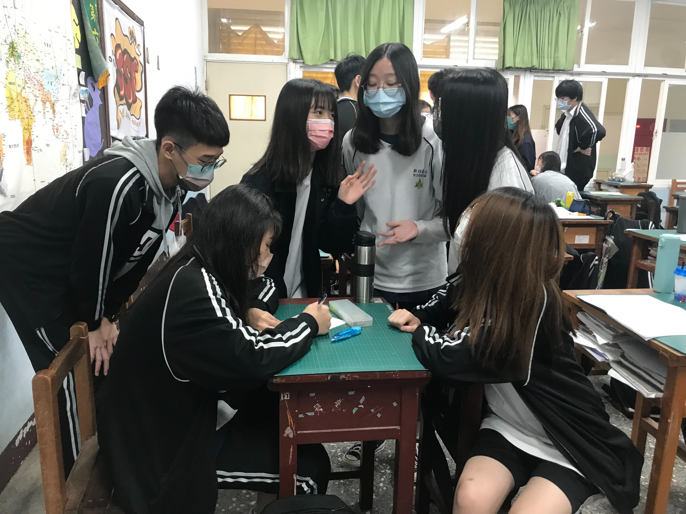
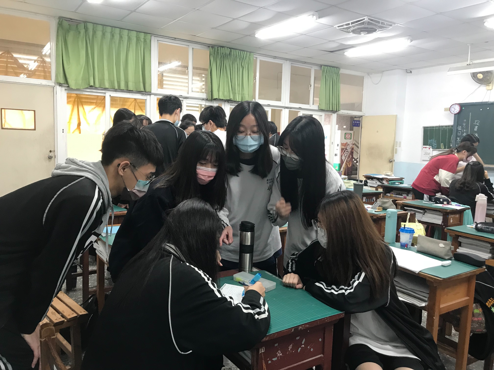

Business Theory
 從前，有一個人叫奕翔，自幼家境不好，但是他的妹妹對於義式料理特別的嚮往， 可是一家人沒有什麼餘裕能享用昂貴的義式料理，唯有在生日時才能吃到， 因此長大後的奕翔為了實現自己以及妹妹兒時的夢想，與朋友們合資開設了一間義式餐廳， 希望自己的妹妹以及學生們能在補習前，享用到如此平價又美味的義式料理， 同時也希望假日在市區遊玩的家庭能夠來品嚐他兒時遺憾未能吃成的義式料理， 並希望成為一家帶給所有人獨特又美好回憶的餐廳。
從前，有一個人叫奕翔，自幼家境不好，但是他的妹妹對於義式料理特別的嚮往， 可是一家人沒有什麼餘裕能享用昂貴的義式料理，唯有在生日時才能吃到， 因此長大後的奕翔為了實現自己以及妹妹兒時的夢想，與朋友們合資開設了一間義式餐廳， 希望自己的妹妹以及學生們能在補習前，享用到如此平價又美味的義式料理， 同時也希望假日在市區遊玩的家庭能夠來品嚐他兒時遺憾未能吃成的義式料理， 並希望成為一家帶給所有人獨特又美好回憶的餐廳。